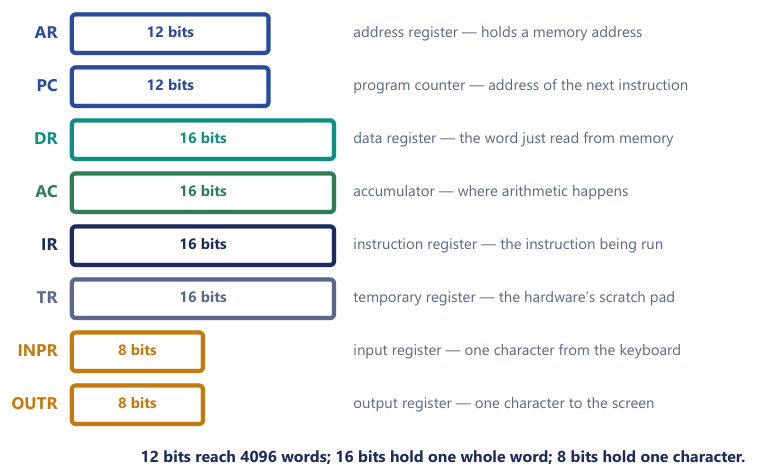
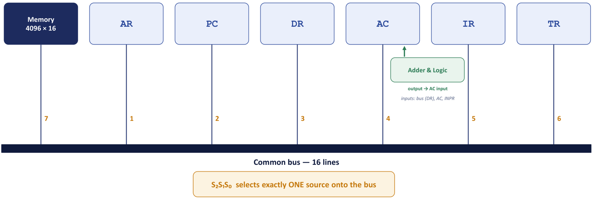
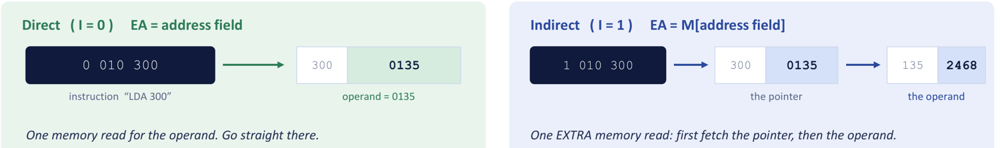
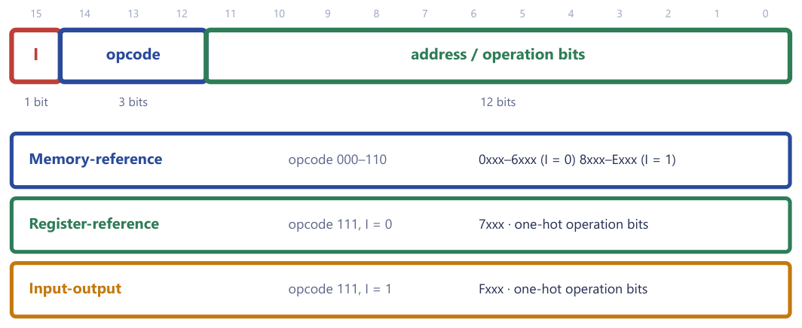

Chapter 9: The Basic Computer: Registers, Bus and Instruction Codes¶
The smallest machine that is still a real computer, opened up: its memory, its registers, the shared bus that joins them, and the 16-bit words that tell it what to do.
Up to now we have built the parts of a computer one at a time: gates, flip-flops, registers, adders, multiplexers and decoders. This chapter is where those parts are finally assembled into a machine that runs programs. The machine we study is the basic computer, a deliberately tiny design from the course text (M. Morris Mano, Computer System Architecture, 3rd ed.). Nobody ships it in a phone, but it is the training aircraft of processor design: small enough that every register, every wire and every step of every instruction can be written out exactly, and real enough that the loop it runs (fetch an instruction, decode it, execute it, repeat) is the same loop that your laptop runs billions of times a second. Everything later in the course, from addressing modes to caches and pipelines, is this machine made wider, deeper and faster.
We start with the idea that makes a computer a computer rather than a calculator, the stored program, and with the numbers that fix the machine's shape: a memory of 4096 words of 16 bits, eight registers, a handful of one-bit flip-flops. We then see how those registers are wired to one another through a single shared bus, and how a register-transfer statement such as AR ← PC turns into actual control signals. The second half of the chapter is about the instruction itself: how 16 bits are divided into a mode bit, an opcode and an address, how the same word can be read in three different formats, what an effective address is, and how to read a hexadecimal instruction at a glance. The next chapter takes these static pieces and sets them in motion with timing and control.
What you will learn
- State the stored-program concept and explain why program and data share one memory.
- Give the size of the basic computer's memory, the number of address and data lines, and the width and purpose of each of its eight registers.
- Describe the common bus and write the selection code
S2S1S0, the load signal and the memory control for any register transfer; recognise transfers that the hardware cannot do in one step. - Divide a 16-bit instruction into mode bit, opcode and address; compute the effective address under direct and indirect addressing; size the fields of an instruction format for a given machine.
- Distinguish the memory-reference, register-reference and input-output formats and explain why the one-hot hexadecimal codes are powers of two.
- Decode any 16-bit word written in hexadecimal, and encode any of the 25 instructions.
9.1 The stored-program computer¶
A digital computer is a collection of registers, a memory and control circuits that move data between them. What turns this collection into a computer, rather than a fixed-function calculator, is that the sequence of operations it performs is not wired into the hardware. It is held in memory as a program, a sequence of instructions, and the hardware simply fetches and carries out one instruction after another.
A helpful picture is a clerk at a desk facing a wall of numbered pigeonholes, each holding one slip of paper with a number on it. The clerk repeats four actions for ever: look at a bookmark to see which pigeonhole is next; take out that slip; read it ("add the number in pigeonhole 83 to your running total"); do it, move the bookmark on, and start again. Name the parts and you have the basic computer. The wall is the memory and the pigeonhole numbers are the addresses. The bookmark is the program counter PC, the slip being read sits in the instruction register IR, the running total is the accumulator AC, and the four-step loop is the instruction cycle, which we study in the next chapter.
The stored-program concept
In a stored-program machine both the program (the sequence of instruction codes) and the data it works on are held in the same memory, in the same binary form. The control unit reads an instruction from memory, interprets its operation code, carries it out, and then reads the next one. Because instructions are just numbers, a program can be loaded, changed or replaced without rewiring the machine.
The idea is due to von Neumann, and its importance is easiest to feel by contrast. A music box plays one tune, because the tune is fixed by metal pins on a drum; to play a new song you must build a new drum. The behaviour lives in the hardware, so changing the behaviour means changing the hardware. A piano roll is a stored program: a strip of paper with holes that you can swap in seconds, and the melody is data that the same machine reads, so one machine plays infinitely many tunes. That single insight is why you can install a new application without soldering anything.
One memory, two readings¶
A common misconception is that instructions and data live in separate memories. In the basic computer they do not; they share one. A word is an instruction only because the control unit fetches it as one. Nothing in the bit pattern marks it as an instruction. The written line "READ ME" is an order if it is on a note pinned to your door, and a description if it is printed inside a book about signs: same ink, different role. Meaning comes from when and how a word is used, not from the bits alone.
Example 9.1: The same 16 bits, read two ways
The word 2350 is the bit pattern 0010 0011 0101 0000.
Fetched during a fetch cycle, it is an instruction. The leading bit is 0 (direct), the next three bits 010 name the operation LDA, and the remaining twelve bits 350 are an address: the instruction LDA 350, "load into AC the word stored at address 350".
Read as data (for instance as an operand that an ADD brings into the accumulator), the same pattern is just a number: \(2\cdot 4096 + 3\cdot 256 + 5\cdot 16 + 0 = 9040\).
This is also why a buggy program that jumps into a data area starts "executing" nonsense: the machine obediently reads numbers as commands.
Instruction code, operation, microoperation¶
An instruction code is a group of bits that tells the computer to perform a specific operation. It has at least two parts: the operation code (opcode), which says what to do, and the operand or address, which says what to do it to. Think of one line of a recipe: "add 2 cups of flour". The verb add is the opcode; the ingredient and quantity are the operand. The recipe is the program and the cook is the control unit. A cook cannot invent a new verb; they can only carry out the verbs they know, and that fixed list of verbs is the instruction set. The instruction set together with the registers, the instruction formats and the addressing modes forms the instruction set architecture (ISA), the contract between hardware and software. The basic computer has 25 instructions; an x86 processor has well over a thousand.
An instruction is not the smallest thing the hardware does. Each instruction is carried out as a sequence of microoperations, where a microoperation is an elementary operation performed on information stored in one or more registers during one clock pulse: a transfer, an increment, a clear, an addition. It is a common mistake to think that one line of a high-level language is one instruction. The statement x = a + b; becomes several machine instructions (LDA a, ADD b, STA x), and each of those is itself several microoperations. Program, instruction and microoperation are three different levels, and we examine the relation between them in the next chapter.
9.2 The parameters of the basic computer¶
The basic computer is described by a few numbers, and almost everything else in this chapter follows from them.
| Quantity | Value | Why it is that number |
|---|---|---|
| Memory | 4096 words of 16 bits | \(4096 = 2^{12}\), so an address is 12 bits |
| Word length | 16 bits | one word holds one instruction or one data operand |
| Address field | 12 bits | bits 0-11 of an instruction |
| Opcode field | 3 bits | bits 12-14, so eight codes 000-111 |
| Mode bit | 1 bit | bit 15, called \(I\): direct or indirect |
| Instructions | 25 | 7 memory-reference, 12 register-reference, 6 input-output |
| Registers | 8 (plus the sequence counter SC) | AR, PC, DR, AC, IR, TR, INPR, OUTR |
| Flip-flops | 7 | I, S, E, R, IEN, FGI, FGO |
A memory of 4096 words of 16 bits is not 4096 bits and not 4096 bytes. It holds \(4096 \times 16 = 65\,536\) bits, which is 8192 bytes or 8 KB. The two widths that matter, 12 and 16, are different numbers for different jobs: 12 is the width of an address, 16 is the width of a word. Mixing them up is the commonest slip in this unit.
Counting address lines¶
How many bits does it take to name \(N\) things? The answer, \(\lceil \log_2 N \rceil\), is the same arithmetic as "how many digits are needed to number the houses on a street": 100 houses need 2 decimal digits, and 4096 memory words need 12 binary digits. Every address-size question in this course is that one line. A memory of \(2^k\) words of \(m\) bits has \(k\) address lines (enough to give every word a different number) and \(m\) data lines (one for each bit of a word, read or written together), and it stores \(2^k \times m\) bits in all.
Two cautions accompany the rule. First, in computing \(K = 2^{10} = 1024\), \(M = 2^{20}\) and \(G = 2^{30}\), not powers of ten, so \(256\text{K} = 256 \times 1024 = 2^{18} = 262\,144\) words, not "about 250 000". Capacities are powers of two on purpose, so that address widths come out whole. Second, when a quantity is not a power of two the result must be rounded up: you cannot name 30 registers with 4.9 bits, you need 5.
Example 9.2: Why 12 address bits?
Problem. The basic computer's memory has 4096 words. How many bits does AR need, and how many bits are left in the 16-bit instruction word for the opcode and the mode?
Solution. The number of address bits \(k\) must satisfy \(2^k \ge 4096\). Since \(2^{12} = 4096\), \(k = 12\). So AR is 12 bits, and every instruction reserves 12 bits for the address. The word is 16 bits, leaving \(16 - 12 = 4\) bits: 1 for the mode (\(I\)) and 3 for the opcode.
Answer. AR = 12 bits; instruction format = 1 (\(I\)) + 3 (opcode) + 12 (address).
The split 1/3/12 is therefore not a design choice at all but an arithmetic consequence: the address width is forced by the memory size, the mode bit costs one, and whatever is left becomes the opcode.
Example 9.3: Scaling the same idea
Problem. A machine has 64 K words of memory and a 32-bit instruction word with a 6-bit opcode and one mode bit. How many bits are left over, and what could they be used for?
Solution. \(64\text{K} = 65\,536 = 2^{16}\) words, so the address needs 16 bits. Used so far: \(6 + 1 + 16 = 23\) bits. Left over: \(32 - 23 = 9\) bits, enough to name a register (32 registers need 5 bits) plus some extra addressing-mode bits.
Answer. 16 address bits; 9 bits spare.
Example 9.4: Memory lines and capacity
Problem. (a) A computer uses a memory unit with 256 K words of 32 bits each. How many bits are there in the data and address inputs of the memory? (b) A memory unit has 1 M words of 16 bits. How many address and data lines does it have, and how many bits does it store?
Solution. (a) \(256\text{K} = 256 \times 1024 = 2^8 \cdot 2^{10} = 2^{18}\) words, so there are 18 address inputs. One word is 32 bits and a read delivers a whole word at once, so there are 32 data inputs.
(b) \(1\text{M} = 2^{20}\) words gives 20 address lines; 16-bit words give 16 data lines. Capacity \(= 2^{20} \times 16 = 16\,777\,216\) bits \(= 2\) MB.
The basic computer itself fits the same rule: \(4096 \times 16 = 2^{12} \times 16\), so 12 address lines and 16 data lines, which is exactly why AR is 12 bits wide and DR is 16.
9.3 Registers and flip-flops¶
The processor part of the basic computer contains eight registers plus a small set of one-bit flip-flops (and the sequence counter SC that belongs to the control unit and is described in the next chapter). A register is a very small, very fast box of bits that lives inside the processor instead of out in memory. Each register has a name, a fixed bit width and one specific job. Every register exists because some step needs a dedicated place to hold one value while another step is in progress.
| Register | Symbol | Bits | Function |
|---|---|---|---|
| Data register | DR |
16 | Holds the operand just read from memory (or the word about to be written). |
| Address register | AR |
12 | Holds the address for memory; the only register that drives the memory's address lines. |
| Accumulator | AC |
16 | The main processor register; arithmetic and logic results are formed here. |
| Instruction register | IR |
16 | Holds the instruction code currently being executed. |
| Program counter | PC |
12 | Holds the address of the next instruction to fetch. |
| Temporary register | TR |
16 | Scratch storage for the control unit (used, for example, in the interrupt cycle). |
| Input register | INPR |
8 | Receives one character from the input device; feeds AC. |
| Output register | OUTR |
8 | Holds one character sent to the output device; loaded from AC. |
To keep the roles straight, return to the clerk at the desk. PC is the bookmark in the ledger, "do this line next". AR is the slip of paper on which the clerk writes a shelf number before walking to the archive; the archivist accepts requests only on that slip. DR is the tray where the fetched document lands, IR is the order form currently being read, and AC is the scratch pad where sums are worked out.

Why the widths differ¶
Figure 9.1 draws the registers to scale, and the differing widths are not arbitrary. Register widths are chosen to match what they must hold.
ARandPChold addresses, so they are 12 bits: exactly enough to reach the 4096 words of memory.DR,AC,IRandTRhold a whole word, so they are 16 bits.INPRandOUTRhold one character, so 8 bits is enough.
It is tempting to say "AR could just be 16 bits like the others". It could, but only its low 12 bits would ever matter, because memory has only \(4096 = 2^{12}\) locations; a thirteenth address bit would point at memory that does not exist. When a 12-bit register takes part in a transfer with a 16-bit one (we meet this on the bus below), it simply uses the low 12 bits and ignores or zero-fills the rest.
Example 9.5: Describing the registers
Problem. Describe the functions of (i) AR, (ii) AC, (iii) PC, (iv) DR and (v) IR. Three things earn the marks every time: what it holds, how wide it is, and when it is used.
Solution.
AR(12 bits). Holds the memory address that the next read or write will use. The address input of the memory unit is wired toARand to nothing else, so every memory access goes throughAR: during fetch it receivesPC, and during execution it receives the address part of the instruction.AC(16 bits). The processor's working register, where results are built up. One operand of every arithmetic or logic operation isAC, and the result is written back intoAC(AND,ADD,LDA, and the register-reference instructionsCMA,CIR,CIL,INCall act on it). Its companion flip-flopEcatches the carry out.PC(12 bits). Holds the address of the next instruction. It is incremented during fetch, so by the time an instruction executesPCalready points past it. That is why a branch simply overwritesPC, and whyBSAsavesPCas the return address.DR(16 bits). Holds the word just read from memory, or the word about to be written to it. Every operand travels throughDR: the adder-and-logic circuit takes one input fromACand the other fromDR, never straight from memory.IR(16 bits). Holds the instruction being executed. Its bits are read in three groups: bit 15 is \(I\), bits 12-14 go to a 3-to-8 decoder to produce \(D_0 \dots D_7\), and bits 0-11 are copied intoARas the address.
The other three registers need one line each. TR is scratch space that the hardware keeps for itself and that no instruction names; INPR takes one character arriving from the keyboard; OUTR holds one character on its way to the printer or screen.
The seven one-bit flip-flops¶
Besides the registers, the machine has seven single-bit flip-flops, each of which records one fact.
| Flip-flop | Meaning when set | Set or cleared by |
|---|---|---|
I |
the current instruction uses indirect addressing | loaded from IR(15) during decode |
S |
the computer is running (S = 0 means halted) |
cleared by HLT |
E |
extended AC bit: the carry out of an addition |
ADD, CLE, CME, CIR, CIL |
R |
an interrupt is pending; the next cycle is the interrupt cycle | set by the interrupt condition, cleared at the end of the interrupt cycle |
IEN |
interrupts are enabled | ION sets, IOF clears |
FGI |
input flag: a character is ready in INPR |
set by the device, cleared by INP |
FGO |
output flag: the output device is ready | set by the device, cleared by OUT |
E deserves a word now, because it appears in the first instruction we meet. When two 16-bit numbers are added the sum can need 17 bits. The seventeenth bit, the carry out, has nowhere to go inside a 16-bit AC, so it is caught in E. You can think of E as the 17th bit of the accumulator. We return to R, IEN, FGI and FGO when we study input-output and interrupts.
9.4 The common bus¶
Eight registers of 16 bits each: wiring every register to every other one would take hundreds of wires, and most of them would sit idle almost all the time. The basic computer avoids this by letting all the registers and the memory share one set of 16 lines, the common bus. At any moment exactly one unit places its contents on the bus, and any register whose load control LD is enabled copies the bus into itself on the next clock pulse.
The bus is a one-lane bridge. A traffic controller, the three selection lines S2S1S0, lets exactly one vehicle onto the bridge at a time; anyone waiting to receive the value simply opens their gate (LD = 1) and grabs a copy as it passes. The trade is cheap wiring in exchange for a limit of one bus transfer per clock pulse, which is precisely why an instruction takes several timing steps instead of one.

The eight selections¶
Three selection lines give \(2^3 = 8\) codes. Code 0 puts nothing useful on the bus, codes 1 to 6 select the six registers, and code 7 selects the memory output. Figure 9.2 numbers the sources the same way.
S2 |
S1 |
S0 |
Decimal | Unit placed on the bus |
|---|---|---|---|---|
| 0 | 0 | 0 | 0 | none (nothing useful) |
| 0 | 0 | 1 | 1 | AR |
| 0 | 1 | 0 | 2 | PC |
| 0 | 1 | 1 | 3 | DR |
| 1 | 0 | 0 | 4 | AC |
| 1 | 0 | 1 | 5 | IR |
| 1 | 1 | 0 | 6 | TR |
| 1 | 1 | 1 | 7 | Memory, M[AR] |
There is nothing to memorise beyond the order: AR, PC, DR, AC, IR, TR, memory are sources 1, 2, 3, 4, 5, 6, 7, and S2S1S0 is just that number written in binary. Want PC on the bus? PC is source 2, so write 2 in binary, 010. Want memory? Memory is 7, so 111. In hardware the selection is made by a set of multiplexers (in Mano's design, sixteen 8-to-1 multiplexers, one per bus line) whose select inputs are S2S1S0.
The register controls¶
Every register has three kinds of control input.
- LD (load) copies the bus into the register on the next clock pulse.
- INR (increment) adds 1 to the register, in place.
- CLR (clear) resets the register to 0.
LD needs the bus; INR and CLR do not, because they act locally inside the register. (AR, PC, DR, AC and TR can be incremented or cleared; SC has only INR and CLR.) Memory has a Read and a Write control: on a read it drives the bus (source 7), and on a write it takes its input from the bus. In both cases it works at the address held in AR. A register transfer on the bus therefore always needs two things: a selection code (who talks) and a load enable (who listens).
The adder-and-logic circuit¶
Two paths do not go through the bus at all, and Figure 9.2 shows the first of them. The inputs of AC come from an adder-and-logic circuit whose own two inputs are AC and DR; a third input, INPR, lets the INP instruction bring a character into AC. The circuit performs AC ∧ DR, AC + DR, a plain transfer of DR, a complement of AC, and the shifts, and its single output goes back into AC. It is not a bus source. This is what makes AC ← AC + DR possible in one clock pulse: AC never has to drive the bus in order to be added to. INPR and OUTR are also off the bus: INPR reaches AC through the adder, and OUTR is loaded from AC.
A 12-bit register (AR, PC) drives or loads only the low 12 of the 16 bus lines, and when it drives the bus its upper four bits read as 0.
Three rules that decide what is possible¶
The wiring just described leaves the basic computer with three rules, and almost every "why is this illegal?" question is one of them.
- One source per clock pulse. One talker, any number of listeners. Two microoperations may share a pulse only if at most one of them needs the bus.
IR ← M[AR], PC ← PC + 1is legal becausePCincrements inside itself and never touches the bus;DR ← AC, IR ← PCis not, because it needs two talkers. - Memory is addressed only through
AR. The address input of the memory unit is wired toARand to nothing else, soM[PC]orM[DR]cannot exist.DR ← M[PC]is illegal; the legal version isAR ← PCfollowed byDR ← M[AR], in two clock pulses. ACis loaded only through the adder and logic circuit, whose inputs areACandDR. No other register reaches it.AC ← AC + IRis illegal; the legal version isDR ← IRfollowed byAC ← AC + DR.
Check any suspicious register-transfer statement against all three in turn: does it address memory with something other than AR? does it feed the adder with something other than AC and DR? does it need the bus twice in one pulse? If none applies, it is legal.
9.5 From microoperations to control signals¶
The notation we use to describe the machine is register transfer language (RTL). Its conventions are few.
- The arrow
←means "is replaced by":AR ← PCcopies the contents ofPCintoAR, and the right-hand side is unchanged. - Square brackets denote a memory word:
M[AR]is the word whose address is inAR. - A comma separates microoperations performed in the same clock pulse:
PC ← PC + 1, AR ← 0. - A colon separates a control condition from the operation:
T0: AR ← PCmeans "when timing signalT0is active, performAR ← PC".
Here we ask what a microoperation turns into in hardware. Take the simplest, AR ← PC, "copy the contents of PC into AR".
- Put
PCon the bus. SetS2S1S0 = 010(decimal 2 isPC).PC's 12 bits appear on the low 12 bus lines. - Let
ARlisten. EnableLD(AR) = 1. Every other register keepsLD = 0. - Clock pulse. On the clock edge the low 12 bus lines are latched into
AR. Done, in one clock pulse.
AR is only 12 bits, so it takes just the low 12 of the 16 bus lines and the top four are simply ignored. The width mismatch is harmless: register widths and bus width need not match, because each register takes the slice it needs.
The commonest slip
Students write S2S1S0 = 001 for AR ← PC because they see AR first. The selection code names the source, never the destination. The source is PC, which is number 2, so 010. The destination is set by LD, not by S.
This gives a template for any transfer X ← Y:
S2S1S0= the bus code ofY;LD(X) = 1;Read = 1ifYis memory;Write = 1ifXis memory.
When a question says "give the control signals", answer in exactly three slots: who drives the bus (S2S1S0), who listens (LD, INR or CLR), and whether memory is involved (Read or Write).
Two microoperations in one pulse¶
The fetch step of the instruction cycle contains the pair IR ← M[AR], PC ← PC + 1. Yet the bus lets only one source drive it per clock pulse. How can two things happen "at once"? The answer is that only IR ← M[AR] uses the bus (memory drives it, IR loads it). PC ← PC + 1 does not travel across the bus at all: PC has its own private increment input INR that adds 1 in place inside the register. The two microoperations therefore do not compete for the single bus, and both finish on the same clock edge. The moral is that transfers between registers use the bus, while a register incrementing or clearing itself does not. This is what allows several microoperations to share one timing step. The table shows which statements need the bus.
| Microoperation | Uses the bus? | Control signals |
|---|---|---|
AR ← PC |
yes: PC drives, AR loads |
S2S1S0 = 010, LD(AR) |
IR ← M[AR] |
yes: memory drives, IR loads |
S2S1S0 = 111, Read, LD(IR) |
M[AR] ← AC |
yes: AC drives, memory writes |
S2S1S0 = 100, Write |
PC ← PC + 1 |
no: local INR |
INR(PC) |
AC ← AC + 1 |
no: local INR |
INR(AC) |
AR ← 0 |
no: local CLR |
CLR(AR) |
Example 9.6: Control signals for a memory read
Problem. Give the bus selection and control signals that realise DR ← M[AR], the read of the word addressed by AR into DR.
Solution. The source is memory, so S2S1S0 = 111 (decimal 7) and the memory Read control is asserted. The destination is DR, so LD(DR) = 1. The address used is whatever is already in AR, because memory always reads from the address in AR.
Answer. S2S1S0 = 111, Read = 1, LD(DR) = 1.
The source decides S; the destination decides LD.
Example 9.7: Three transfers, filling in the signals
Problem. Complete the table of signals for M[AR] ← AC, PC ← AR, IR ← M[AR] and TR ← PC.
Solution. Apply the template: bus code of the source, load of the destination, Read/Write if memory is involved.
| Microoperation | S2S1S0 |
Other controls |
|---|---|---|
M[AR] ← AC |
100 (AC is 4) |
Write = 1 |
PC ← AR |
001 (AR is 1) |
LD(PC) = 1 |
IR ← M[AR] |
111 (memory is 7) |
Read = 1, LD(IR) = 1 |
TR ← PC |
010 (PC is 2) |
LD(TR) = 1 |
In the fetch step, PC ← PC + 1 happens in the same clock pulse as IR ← M[AR], via INR(PC), with no bus cycle of its own.
Example 9.8: AC ← AC + DR and the bus
Problem. A student claims that AC ← AC + DR needs S2S1S0 = 100, because AC is involved. Is that right?
Solution. No. AC and DR are the two inputs of the adder-and-logic circuit, which feeds AC directly. Neither register has to be placed on the bus, so the bus is free (and S2S1S0 is irrelevant). The control signals are simply the adder-and-logic function "add" and LD(AC) = 1. AC never has to drive the bus to be added to.
Transfers that cannot be written directly¶
Now apply the three rules.
Example 9.9: Two statements that cannot be executed as written
Problem. Explain why each of the following statements cannot be directly executed in the basic computer, and give the correct sequence of microoperations: (i) IR ← M[PC]; (ii) AC ← AC + TR.
Solution.
(i) The address input of the memory unit is hard-wired to AR. PC cannot address memory: there is no path at all from PC to the address lines. The correct sequence needs two clock pulses, because two bus transfers are needed:
T0: AR ← PC (put the address where memory can see it)
T1: IR ← M[AR] (now the read is legal)
(ii) The adder-and-logic circuit has exactly two inputs, AC and DR; TR is not wired to it. The operand must be brought to DR first:
T0: DR ← TR (TR drives the bus, S2S1S0 = 110; DR loads)
T1: AC ← AC + DR (legal, and needs no bus cycle)
These are exactly the three rules of Section 9.4 in action: memory only through AR, and AC only through AC and DR. (The timing labels T0, T1 here only number the pulses.)
The same reasoning explains why AC ← M[AR] cannot be a single step either, although PC ← M[AR] can. In the second, memory drives the bus and PC loads from the bus, which is exactly what an indirect branch does. AC, by contrast, does not load from the bus: its input comes from the adder-and-logic circuit, whose operand is DR. The correct sequence is DR ← M[AR] then AC ← DR, which is precisely what the LDA instruction does.
Example 9.10: Swapping AC and DR in one pulse
Problem. Can the basic computer perform DR ← AC and AC ← DR at the same time, exchanging the two registers in one clock pulse?
Solution. Yes, because only one of the two transfers uses the bus. AC is placed on the bus with S2S1S0 = 100 and LD(DR) = 1; at the same time the adder-and-logic circuit presents DR to the input of AC (the transfer function) with LD(AC) = 1. Both loads take place on the same clock edge, so each register receives the other's old value. The exchange works because the second transfer travels through the adder circuit, not over the bus.
9.6 Instruction codes and the 16-bit word¶
An instruction is a binary code, stored in memory like any other word, that tells the processor to perform one specific operation. In the basic computer an instruction is exactly one 16-bit word, and the bit pattern is called the instruction code. Besides the opcode and the address, an instruction format may contain addressing-mode bits (how to interpret the address), register-select fields, and in some machines an immediate-value field or a displacement. The basic computer needs only the first three.
How many addresses?¶
An instruction format defines how the bits of an instruction word are divided into fields. The biggest design decision is how many operand addresses each instruction names, and this is how machines are classified.
| Format | Typical instruction | Meaning | Where the result goes | Seen in |
|---|---|---|---|---|
| Three-address | ADD X, A, B |
add the contents of A and B | into a third named place X | RISC machines with register operands |
| Two-address | ADD A, B |
add B into A | into one of the two operands | x86 and most CISC machines |
| One-address | ADD A |
add A to the accumulator | always into AC (implied) |
the basic computer |
| Zero-address | ADD |
add the top two stack items | back onto the stack | stack machines; the Java VM |
Every memory-reference instruction of the basic computer works on the accumulator: "AC ← AC + M[EA]". Because AC is implied, it never has to be named in the instruction, so the format needs just one 12-bit address. That is exactly what leaves room for three opcode bits and the mode bit inside 16 bits. The trade-off is the usual one: fewer address fields mean shorter instructions, but you need more of them to get the same work done.
Example 9.11: X = (A + B) × (C + D) in four formats
Problem. Write the computation of \(X = (A+B)\times(C+D)\) for a three-, two-, one- and zero-address machine, and count the instructions.
Solution.
| Three-address (3) | Two-address (6) | One-address (7) | Zero-address (8) |
|---|---|---|---|
ADD R1, A, B |
MOV R1, A |
LOAD A |
PUSH A |
ADD R2, C, D |
ADD R1, B |
ADD B |
PUSH B |
MUL X, R1, R2 |
MOV R2, C |
STORE T |
ADD |
ADD R2, D |
LOAD C |
PUSH C |
|
MUL R1, R2 |
ADD D |
PUSH D |
|
MOV X, R1 |
MUL T |
ADD |
|
STORE X |
MUL |
||
POP X |
Reading the trend. As the number of address fields falls, the number of instructions rises (3, 6, 7, 8), but each instruction is shorter because it names fewer things. Three-address names everything; two-address reuses one operand as the destination; one-address hides the destination in AC; zero-address hides both operands on the stack, so the instruction says only what to do, never to what. The basic computer is the one-address column, with LOAD = LDA, ADD = ADD and STORE = STA.
Sizing the fields of a format¶
The same reasoning is used for any machine. Three fields are determined by the data in the question, and the opcode takes whatever bits remain.
- Address field = \(\lceil\log_2(\text{number of memory words})\rceil\).
- Mode field = \(\lceil\log_2(\text{number of addressing modes})\rceil\).
- Register field = \(\lceil\log_2(\text{number of registers})\rceil\).
- Opcode field = word length minus the other three.
- Finish by adding the fields back up: the total must equal the word length. This free check catches every arithmetic slip.
Never try to compute the opcode first, and always round up.
Example 9.12: Instruction-format field widths
Problem. A computer has a memory of 64 K words, each 32 bits wide. One memory word stores a single instruction. The instruction contains four fields: an addressing-mode field (to select one of 4 addressing modes), an opcode field, a register code (to select one of 30 registers) and an address field. Specify the number of bits required for each field.
Solution.
- Mode: 4 modes need \(\log_2 4 = 2\) bits.
- Register: 30 registers need \(\log_2 30 \approx 4.9\), so 5 bits (\(2^4 = 16\) is too few; \(2^5 = 32\) is enough, with two codes spare).
- Address: \(64\text{K} = 2^{16}\) words, so 16 bits.
- Opcode: \(32 - 2 - 5 - 16 = 9\) bits.
Answer. Mode 2, opcode 9, register 5, address 16, and \(2 + 9 + 5 + 16 = 32\).
| mode 2 | opcode 9 | register 5 | address 16 |
Example 9.13: The same question, a larger machine
Problem. A computer uses a memory unit with 256 K words of 32 bits each. A binary instruction code is stored in one word. The instruction has four parts: a mode field to specify one of 16 addressing modes, an operation code, a register code part to specify one of 60 registers, and an address part. (i) How many bits are there in each part? (ii) Draw the instruction word format. (iii) How many bits are there in the data and address inputs of memory?
Solution.
(i) 16 modes need 4 bits. 60 registers need \(\log_2 60 \approx 5.9\), so 6 bits (\(2^5 = 32\) is too few, \(2^6 = 64\) is enough). \(256\text{K} = 2^{18}\) words, so the address is 18 bits. The opcode is \(32 - 4 - 6 - 18 = 4\) bits.
(ii) One row of four boxes, widths marked, total 32:
| MODE 4 | OPCODE 4 | REGISTER 6 | ADDRESS 18 |
(iii) The memory has \(2^{18}\) words, so 18 address inputs; each word is 32 bits, so 32 data inputs.
Check. \(4 + 4 + 6 + 18 = 32\).
9.7 Direct and indirect addressing¶
In the basic computer the 16-bit instruction word has three fields.
| Bit 15 | Bits 14-12 | Bits 11-0 |
|---|---|---|
I (mode) |
opcode (3 bits) | address (12 bits) or operation bits |
The opcode has three bits, so there are eight codes 000 to 111; codes 000-110 are the seven memory-reference operations, and code 111 is shared by two other formats. The address field is 12 bits, enough to name any of the 4096 memory words. An instruction is a tiny sentence: a verb (the opcode: "add", "load", "store"), a noun that tells you where to find it (the 12-bit address) and a one-bit adverb (the \(I\) bit: "use this address directly" or "the real address is written over there"). "LDA 350" is just "load what is at 350".
The address field never changes; what changes is what you do with it. The effective address (EA) is the address of the operand that the instruction will actually use, and the mode bit \(I\) decides how it is obtained.
- Direct (\(I = 0\)): the address field is the address of the operand: \(EA = \text{address field}\). One memory read fetches the operand. Direct addressing is a friend's home address: go straight there.
- Indirect (\(I = 1\)): the address field points to a memory word that holds the address of the operand: \(EA = M[\text{address field}]\). One extra memory read fetches the pointer, then another fetches the operand. Indirect addressing is a mail-forwarding slip: the address you were given holds a note saying "they actually live at 135", so you make one extra hop.
Figure 9.3 shows both cases for the same address field 300.

Indirect addressing costs a second memory read, but it is what makes pointers possible: change the note in one place and every instruction that follows it reaches the new operand, without editing the instructions themselves. It is the seed of the whole family of addressing modes (indexed, relative, base-register) that later instruction sets provide.
Indirection is single-level
In the basic computer indirection happens exactly once. The hardware does not keep following pointers until it hits real data, even if the fetched word looks like another address. In LDA I 040 with M[040] = 0100 and M[100] = 0250, AC receives 0250, not the contents of address 250. One \(I\) bit, one extra hop.
Counting memory accesses for an instruction that reads its operand, including the one that fetches the instruction itself: an immediate operand (carried inside the instruction, which the basic computer does not use for memory-reference instructions but is part of the general vocabulary) needs 1 access; direct needs 2 (instruction, operand); indirect needs 3 (instruction, pointer, operand).
Example 9.14: Effective address, direct and indirect
Problem. Location 250 (hex) holds the instruction, and the address field of the instruction is 300 (hex). Memory word 300 contains 0135, and word 135 contains 2468. Find the effective address and the operand for (a) direct addressing, (b) indirect addressing.
Solution.
(a) Direct (\(I = 0\)): \(EA\) = address field = 300. Operand = M[300] = 0135.
(b) Indirect (\(I = 1\)): \(EA = M[300] = 0135\), so \(EA\) = 135. Operand = M[135] = 2468.
Answer. Direct: EA = 300, operand = 0135. Indirect: EA = 135, operand = 2468.
The three-step recipe for every EA question: (1) read the leading hex digit to find whether \(I\) is 0 or 1; (2) if \(I = 0\), EA is the address field, full stop; (3) if \(I = 1\), look up memory at the address field once and whatever is there is the EA.
Example 9.15: Indirect store, and the effective address
Problem. Word 400 holds B7A0 (STA, indirect, field 7A0). M[7A0] = 0245, M[245] = 00FF, AC = ABCD. What is the EA, and what value ends up where?
Solution. B is 1011, so \(I = 1\) and the opcode is 011 (STA). The address field is 7A0. Indirect: \(EA = M[7A0] = 0245\), i.e. 245. STA stores AC at the effective address: M[245] ← AC.
Answer. EA = 245; location 245 changes from 00FF to ABCD. Location 7A0 is untouched.
Example 9.16: Direct and indirect with the same operand values
Problem. M[300] = 0500 and M[500] = 0800. What does ADD 300 add to AC when (i) \(I = 0\) and (ii) \(I = 1\)?
Solution. (i) Direct: EA = 300, and the operand added is M[300] = 0500. (ii) Indirect: the address field 300 locates a pointer, so EA = M[300] = 0500, and the operand added is M[500] = 0800. The effective address and the operand are two different answers: the address field is where the operand lives, not the operand itself.
9.8 The three instruction formats and the 25 instructions¶
Three opcode bits allow only eight codes, yet the basic computer has 25 instructions. The trick is that opcode 111 is not an instruction at all: it is an escape code meaning "the operation is spelled out in the low 12 bits instead". The two classes of instruction that use it are told apart by the mode bit \(I\). This gives three formats, summarised in Figure 9.4, and one 16-bit word can be read in three different ways.

| Format | Opcode (bits 14-12) | I |
Hex range | How many |
|---|---|---|---|---|
| Memory-reference | 000-110 |
0 or 1 | 0xxx-6xxx (\(I=0\)), 8xxx-Exxx (\(I=1\)) |
7 |
| Register-reference | 111 |
0 | 7xxx |
12 |
| Input-output | 111 |
1 | Fxxx |
6 |
- In the memory-reference format bits 11-0 are an address and \(I\) selects direct (0) or indirect (1) addressing.
- In the register-reference format (opcode
111, \(I = 0\)) there is no memory operand; exactly one bit of the low 12 selects an operation onACorE. - In the input-output format (opcode
111, \(I = 1\)) again exactly one bit of the low 12 selects an operation, this time on the input-output devices and the interrupt system.
The opcode 111 therefore serves two formats, and the hardware tells them apart with the \(I\) bit alone. "7000 and F000 are the same instruction" is a classic error: the \(I\) bit differs, so 7xxx is register-reference and Fxxx is input-output. Twelve one-hot bits with \(I = 0\) give twelve register-reference instructions; with \(I = 1\) the same trick gives six input-output ones, and \(7 + 12 + 6 = 25\).
The memory-reference instructions¶
The seven memory-reference instructions are listed below, with the hex code for \(I=0\) (direct) and \(I=1\) (indirect); the low three hex digits are the address. Their microoperations are the subject of the next chapter.
| Symbol | Opcode | Hex (\(I=0\)) | Hex (\(I=1\)) | Operation | In plain English |
|---|---|---|---|---|---|
AND |
000 |
0xxx |
8xxx |
AC ← AC ∧ M[EA] |
bitwise AND of a memory word into AC |
ADD |
001 |
1xxx |
9xxx |
AC ← AC + M[EA], E ← Cout |
add a memory word to AC, carry into E |
LDA |
010 |
2xxx |
Axxx |
AC ← M[EA] |
load a memory word into AC |
STA |
011 |
3xxx |
Bxxx |
M[EA] ← AC |
store AC into memory |
BUN |
100 |
4xxx |
Cxxx |
PC ← EA |
jump: branch unconditionally |
BSA |
101 |
5xxx |
Dxxx |
M[EA] ← PC, PC ← EA + 1 |
call a subroutine, saving the return address |
ISZ |
110 |
6xxx |
Exxx |
M[EA] ← M[EA] + 1, skip if 0 |
increment memory, skip the next instruction if it became zero |
There is a pattern in the hex codes: setting \(I = 1\) adds 8 to the leading hex digit (0→8, 1→9, 2→A, 3→B, 4→C, 5→D, 6→E), because that is simply bit 15 turning on. AND, ADD, LDA and STA are the "do work" instructions; BUN, BSA and ISZ are control flow: go there, call a routine, count and maybe skip. Every program you have written is these two groups.
The register-reference and input-output instructions¶
Register-reference (opcode 111, \(I=0\)) |
Input-output (opcode 111, \(I=1\)) |
||||
|---|---|---|---|---|---|
CLA |
7800 |
clear AC |
INP |
F800 |
input a character into AC(0-7), clear FGI |
CLE |
7400 |
clear E |
OUT |
F400 |
output the character in AC(0-7), clear FGO |
CMA |
7200 |
complement AC |
SKI |
F200 |
skip next instruction if FGI = 1 |
CME |
7100 |
complement E |
SKO |
F100 |
skip next instruction if FGO = 1 |
CIR |
7080 |
circulate right AC and E |
ION |
F080 |
interrupt enable on (IEN ← 1) |
CIL |
7040 |
circulate left AC and E |
IOF |
F040 |
interrupt enable off (IEN ← 0) |
INC |
7020 |
increment AC |
|||
SPA |
7010 |
skip if AC positive |
|||
SNA |
7008 |
skip if AC negative |
|||
SZA |
7004 |
skip if AC = 0 |
|||
SZE |
7002 |
skip if E = 0 |
|||
HLT |
7001 |
halt the computer (S ← 0) |
The micro-operation of each of these is covered in the chapters on register-reference and input-output instructions; here we need only their encoding.
Why the codes are powers of two¶
In the register-reference and I-O formats each low bit position selects one operation. That is why the hex codes are powers of two within the low 12 bits.
| Bit | B11 | B10 | B9 | B8 | B7 | B6 | B5 | B4 | B3 | B2 | B1 | B0 |
|---|---|---|---|---|---|---|---|---|---|---|---|---|
| Register-reference | CLA |
CLE |
CMA |
CME |
CIR |
CIL |
INC |
SPA |
SNA |
SZA |
SZE |
HLT |
Hex (7xxx) |
7800 |
7400 |
7200 |
7100 |
7080 |
7040 |
7020 |
7010 |
7008 |
7004 |
7002 |
7001 |
| Input-output | INP |
OUT |
SKI |
SKO |
ION |
IOF |
||||||
Hex (Fxxx) |
F800 |
F400 |
F200 |
F100 |
F080 |
F040 |
For example, CLA = 0111 1000 0000 0000 = 7800: only bit 11 of the low twelve is set. One-hot is a row of light switches. A memory-reference opcode is a multiplexer dial (pick one of eight), but the 12 low bits of a 7xxx instruction are a light-switch panel: flip bit 11 and AC clears; flip bit 5 and AC increments. This layout means the hardware needs no decoder here, since each bit wires straight to its own control action, which is why these instructions finish in a single timing step (see the next chapter).
Exactly one bit
Two register-reference bits set at once (for example 7801) is not a legal instruction of the basic computer: the microoperations would fire simultaneously. Exactly one bit of the low twelve should be on.
Classifying the same 25 instructions by function¶
There are two ways to classify the 25 instructions. By format (how the bits are laid out): memory-reference, register-reference, input-output. By function (what they achieve): the six types below. Read the question carefully, because either may be asked.
| Type | What instructions of this type do | General examples | In the basic computer |
|---|---|---|---|
| Data transfer | Move data between memory, registers and I/O devices; nothing is computed | LOAD, STORE, MOV, PUSH, POP, IN, OUT |
LDA, STA, INP, OUT |
| Arithmetic | Compute with numbers | ADD, SUB, MUL, DIV, INC, DEC, NEG |
ADD, INC |
| Logical and bit manipulation | Operate bit by bit: set, clear, complement, shift or rotate | AND, OR, XOR, NOT, CLR, SHL, SHR, ROL, ROR |
AND, CMA, CLA, CLE, CME, CIR, CIL |
| Program control | Change which instruction runs next: jump, call, return, conditional skip | JMP, CALL, RET, BEQ, BNE |
BUN, BSA, ISZ, SPA, SNA, SZA, SZE |
| Input-output | Transfer a character to or from a device and test its flags | IN, OUT, test-flag, enable/disable interrupt |
INP, OUT, SKI, SKO, ION, IOF |
| Machine control | Control the processor itself rather than data | HALT, NOP, WAIT |
HLT |
What is missing tells you a lot. There is no SUB, MUL or DIV. You build them from what exists: subtraction is CMA + INC + ADD (add the two's complement), and multiplication is a loop of ADD and CIL. A small instruction set does not mean a limited machine: it means more work for the programmer, which is precisely the RISC bargain.
A set of instructions is complete if it lets the user write a program for any computable function. The basic computer's set is complete because it contains all four necessary groups: arithmetic, logical and shift instructions (ADD, CMA, INC, CIR, CIL, AND, CLA); instructions that move data between memory and registers (LDA, STA); program control and status checking (BUN, BSA, ISZ and the skip instructions); and input and output (INP, OUT).
9.9 Reading a hexadecimal instruction¶
Hex is used only because 16 bits are four hex digits. The fields do not line up with the digits, so convert first. The first hex digit carries both the mode bit and the opcode (it is \(I\) followed by the three opcode bits); the last three are the address. Decoding is like splitting a phone number: split, look up, done.
- Write the word as four nibbles of binary.
- Split off bit 15 (
I) and bits 14-12 (the opcode). - Classify. Opcode
000-110: memory-reference, and the remaining 12 bits are an address. Opcode111: look at \(I\); 0 means register-reference, 1 means input-output, and the remaining 12 bits are one-hot. - Name it. For a memory-reference instruction the opcode number gives the name (0 AND, 1 ADD, 2 LDA, 3 STA, 4 BUN, 5 BSA, 6 ISZ). Otherwise, find which single bit of the low 12 is set.
There is a shortcut. Look at the leading hex digit: 0-6 is a direct memory-reference instruction; 8-E is an indirect memory-reference instruction (the same instruction with \(I=1\)); 7 is register-reference; F is input-output. The digits 7 and F are the only two that are not addresses.
Example 9.17: Identify the type and meaning of four words
Problem. Decode (a) 2350, (b) B064, (c) 7800, (d) F200.
Solution.
- (a)
2350: leading hex2=0010, so \(I=0\) and the opcode is010= 2. LDA, direct, address 350: "loadM[350]intoAC." - (b)
B064: hexB=1011, so \(I=1\) and the opcode is011= 3. STA, indirect, address field 064: "storeACinto memory at EA =M[064]." - (c)
7800: opcode111with \(I=0\), so register-reference; bit 11 is set. CLA: clearAC. - (d)
F200: opcode111with \(I=1\), so input-output;200=0010 0000 0000, bit 9 is set. SKI: skip the next instruction ifFGI = 1.
Example 9.18: Decoding words from the instruction set
Problem. Decode (a) 6A12, (b) C400, (c) 7040, (d) F040, (e) 0FFF, (f) 2A05, (g) 8123, (h) 7020.
Solution.
- (a)
6A12: leading digit 6, opcode110, \(I=0\): ISZ direct, addressA12; incrementM[A12]and skip the next instruction if it becomes 0. - (b)
C400:C=1100, so \(I=1\), opcode100: BUN indirect, field400; jump to EA =M[400]. - (c)
7040: register-reference; the low 12 bits040=0000 0100 0000, bit 6: CIL, circulateACandEleft. - (d)
F040: input-output, bit 6: IOF, turn the interrupt system off. - (e)
0FFF: opcode000, \(I=0\): AND direct, addressFFF;AC ← AC ∧ M[FFF]. - (f)
2A05: opcode010, \(I=0\): LDA direct, addressA05. - (g)
8123:8=1000, \(I=1\), opcode000: AND indirect, address field123, EA =M[123]. - (h)
7020: register-reference;020=0000 0010 0000, bit 5: INC, incrementAC.
Example 9.19: The same instruction in both modes
Problem. Write the 16-bit hex code for "ADD the word at 45C to AC" (a) directly and (b) indirectly. What changes?
Solution. ADD has opcode 001. With \(I=0\) the leading four bits are 0001 = hex 1, so the word is 145C. With \(I=1\) they are 1001 = hex 9, giving 945C.
Answer. 145C (direct) and 945C (indirect). Only the leading hex digit changes, by exactly 8.
Example 9.20: Decoding the assignment words
Problem. Decode (a) 1BAF, (b) C123, (c) 7100, (d) F800, (e) 6045, (f) A700: give the class, the mode where relevant, the operation and the address field.
Solution. Convert the leading digit to bits and read off \(I\) and the opcode.
| Word | Leading digit | \(I\) | Opcode | Result |
|---|---|---|---|---|
1BAF |
1 = 0001 |
0 | 001 |
memory-reference: ADD direct, address BAF |
C123 |
C = 1100 |
1 | 100 |
memory-reference: BUN indirect, address field 123 |
7100 |
7 |
0 | 111 |
register-reference; 100 has only bit 8: CME |
F800 |
F |
1 | 111 |
input-output; bit 11: INP |
6045 |
6 = 0110 |
0 | 110 |
memory-reference: ISZ direct, address 045 |
A700 |
A = 1010 |
1 | 010 |
memory-reference: LDA indirect, address field 700 |
Encoding is the same method run backwards, and it makes the leading-digit pattern plain: the digit is the mode bit followed by the opcode.
Example 9.21: Encoding instructions
Problem. Write the hexadecimal machine code for (a) ADD indirect, address 3F0; (b) STA direct, address 020; (c) BSA direct, address 100; (d) CLA; (e) SKO.
Solution.
- (a)
ADDis opcode001and indirect sets \(I=1\): leading bits1001=9. Word:93F0. - (b)
STAis011, direct:0011=3. Word:3020. - (c)
BSAis101, direct:0101=5. Word:5100. - (d)
CLAis register-reference with bit 11 set:7800. - (e)
SKOis input-output with bit 8 set:F100.
9.10 Summary¶
Key points
- The basic computer is a stored-program machine: instructions and data share one 4096 × 16 memory, and a word is an instruction only because the control unit fetches it as one.
- Instruction word: bit 15 =
I, bits 14-12 = opcode, bits 11-0 = address; \(1 + 3 + 12 = 16\). The 12-bit address is forced by \(2^{12} = 4096\); the opcode gets what is left. - Eight registers:
ARandPCare 12 bits (addresses),DR,AC,IR,TRare 16 bits (words),INPRandOUTRare 8 bits (characters); seven flip-flopsI,S,E,R,IEN,FGI,FGO. - Eight units share one 16-line bus.
S2S1S0selects the source (1AR, 2PC, 3DR, 4AC, 5IR, 6TR, 7 memory); the load line of the destination says who listens;INRandCLRact locally and need no bus. - Three rules: one bus source per pulse; memory is addressed only through
AR;ACis loaded only through the adder-and-logic circuit with inputsACandDR. - Control-signal template for
X ← Y:S2S1S0= code ofY,LD(X) = 1,ReadifYis memory,WriteifXis memory. - Direct: EA = address field. Indirect: EA =
M[address field], exactly once, at the cost of one extra memory read. - Opcode
111is an escape: with \(I=0\) it is a register-reference instruction (7xxx), with \(I=1\) an input-output instruction (Fxxx), one-hot in the low 12 bits. \(7 + 12 + 6 = 25\) instructions. - To decode a hex word, look at the leading digit:
0-6direct memory-reference,8-Eindirect,7register-reference,Finput-output.
| Item | Value |
|---|---|
| Memory | 4096 × 16 (12 address lines, 16 data lines, 8 KB) |
| Instruction word | I (bit 15), opcode (14-12), address (11-0) |
| Registers | AR 12, PC 12, DR 16, AC 16, IR 16, TR 16, INPR 8, OUTR 8 |
Bus codes S2S1S0 |
000 none, 001 AR, 010 PC, 011 DR, 100 AC, 101 IR, 110 TR, 111 memory |
Memory-reference (I=0 / I=1) |
AND 0xxx/8xxx, ADD 1xxx/9xxx, LDA 2xxx/Axxx, STA 3xxx/Bxxx, BUN 4xxx/Cxxx, BSA 5xxx/Dxxx, ISZ 6xxx/Exxx |
| Register-reference | 7xxx, one of 12 bits: CLA 7800 ... HLT 7001 |
| Input-output | Fxxx, one of 6 bits: INP F800 ... IOF F040 |
| Field sizing | address = \(\lceil\log_2 \text{words}\rceil\), mode = \(\lceil\log_2 \text{modes}\rceil\), register = \(\lceil\log_2 \text{registers}\rceil\), opcode = remainder |
9.11 Exercises¶
Exercise 9.1. List all eight registers of the basic computer with their bit widths, and state the function of each in one line.
Answer
AR (12 bits): holds the address for memory. PC (12): holds the address of the next instruction. DR (16): holds the operand read from or to be written to memory. AC (16): accumulator, where arithmetic and logic results are formed. IR (16): holds the instruction being executed. TR (16): the control unit's temporary scratch register. INPR (8): one character from the input device. OUTR (8): one character for the output device. AR and PC are 12 bits because they hold addresses into 4096 words; INPR and OUTR are 8 bits because they hold a character; the others hold a full 16-bit word.
Exercise 9.2. (a) Why does the basic computer use a common bus instead of point-to-point connections? (b) Give the S2S1S0 code and the unit it selects for all eight codes. (c) State the bus selection and load signals needed to perform PC ← AR.
Answer
(a) Giving every register its own wire to every other register would need a very large number of connections, most idle at any moment. A common bus needs one set of 16 lines; the price is one transfer per clock pulse. (b) 000 none, 001 AR, 010 PC, 011 DR, 100 AC, 101 IR, 110 TR, 111 memory M[AR]. (c) The source is AR, so S2S1S0 = 001; the destination is PC, so LD(PC) = 1.
Exercise 9.3. (a) How many address lines and data lines does the basic computer's memory have? (b) If the memory were expanded to 65 536 words, how many address bits would each instruction need, and what problem would that create for the current 16-bit instruction format?
Answer
(a) 12 address lines and 16 data lines (4096 × 16). (b) \(65\,536 = 2^{16}\), so 16 address bits are needed. That would use up the whole 16-bit word, leaving no room for the opcode and mode bit; a wider word or multi-word instructions would be required.
Exercise 9.4. A memory has 1024 words of 8 bits. How wide are AR and DR if the machine is organised like the basic computer? If the opcode were 4 bits instead of 3, how many opcodes would there be, and how many memory-reference instructions could be kept if one opcode is reserved for the register-reference and input-output escape? (Assume the word grows to 17 bits, or the address shrinks, so that the fields still fit.)
Answer
\(1024 = 2^{10}\), so AR is 10 bits; the word is 8 bits, so DR is 8 bits. A 4-bit opcode gives \(2^4 = 16\) codes. Keeping one as the escape leaves 15 memory-reference instructions.
Exercise 9.5. A memory unit has 1 M words of 16 bits. State the number of address lines, data lines, and the total number of bits stored.
Answer
\(1\text{M} = 2^{20}\) words: 20 address lines. 16 data lines. Capacity \(2^{20} \times 16 = 16\,777\,216\) bits \(= 2\) MB.
Exercise 9.6. Decode each word: give the class (memory-reference, register-reference or I-O), the mode where relevant, the operation and the address field. (a) 1BAF (b) C123 (c) 7100 (d) F800 (e) 6045 (f) A700.
Answer
(a) ADD direct, address BAF. (b) BUN indirect, address field 123. (c) register-reference, CME (bit 8). (d) input-output, INP. (e) ISZ direct, address 045. (f) LDA indirect, address field 700. Method: leading digit 1 = 0001 (\(I=0\), opcode 001), C = 1100 (\(I=1\), 100), 7 register-reference, F input-output, 6 = 0110, A = 1010.
Exercise 9.7. An instruction is stored at address 0AC. Its mode bit is \(I=1\) and its address field is 250. Memory word 250 contains 07F0, and word 7F0 contains 1234. (a) What is the effective address? (b) What is the operand? (c) Repeat both parts if \(I=0\).
Answer
(a) \(I=1\): \(EA = M[250] = 07F0\), so EA = 7F0. (b) Operand \(= M[7F0] = 1234\). (c) \(I=0\): EA = 250, operand \(= M[250] = 07F0\).
Exercise 9.8. Explain, with the bit layout, why opcode 111 is used for both register-reference and input-output instructions, and how the hardware tells the two apart. Give one example hex code of each.
Answer
Three opcode bits give only eight codes, but the machine has 25 instructions. Opcode 111 is an escape meaning that the operation is selected by one bit of the low 12 bits (one-hot) instead of by the opcode. The bit layout is I 111 b11...b0; the mode bit \(I\) is 0 for register-reference and 1 for input-output. Examples: 7800 (CLA, \(I=0\)) and F800 (INP, \(I=1\)). Twelve one-hot bits with \(I=0\) give 12 register-reference instructions, six with \(I=1\) give six I-O instructions.
Exercise 9.9. Write the hexadecimal machine code for (a) ADD indirect, address 3F0; (b) STA direct, address 020; (c) BSA direct, address 100; (d) CLA; (e) SKO.
Answer
(a) 93F0 (b) 3020 (c) 5100 (d) 7800 (e) F100. For memory-reference words the first digit is \(I\) followed by the opcode: 1001 = 9 for ADD indirect, 0011 = 3, 0101 = 5.
Exercise 9.10. Multiple choice.
- The memory of the basic computer is organised as: (A) 256 × 8, (B) 4096 × 16, (C) 1024 × 32, (D) 65536 × 8.
- When
S2S1S0 = 111, the unit placed on the bus is: (A)AC, (B)PC, (C) memory, (D)TR. - An instruction has \(I=1\) and opcode
010. It is: (A) LDA, indirect, (B) LDA, direct, (C) a register-reference instruction, (D) an I-O instruction. - To realise
AR ← DRin one clock pulse, the control settings are: (A)S2S1S0 = 011,LD(AR) = 1; (B)S2S1S0 = 001,LD(DR) = 1; (C)S2S1S0 = 111,LD(AR) = 1; (D)S2S1S0 = 011,LD(DR) = 1. - Compared with the direct version, an indirect
LDAneeds: (A) fewer memory accesses, (B) exactly one additional memory read, (C) two additional reads, (D) no change.
Answer
- B: 4096 × 16, giving 12 address bits and 16-bit words. 2. C: code 7 selects memory. 3. A: \(I=1\) means indirect and
010is LDA. 4. A: the sourceDRis code 3 (011), the destinationARis selected by its load line. 5. B: one extra read to fetch the pointer.
Exercise 9.11. True or false, with a one-line reason. (a) The program counter of the basic computer is 16 bits wide. (b) The same 16-bit pattern in memory can be treated as an instruction or as data, depending only on how and when the CPU fetches it. (c) 7000 and F000 encode the same instruction. (d) In the basic computer indirect addressing follows a chain of pointers until it reaches the operand.
Answer
(a) False: PC is 12 bits because it holds a memory address. (b) True: instructions and data share one memory and are just binary words. (c) False: the \(I\) bit differs, so one is register-reference and the other input-output. (d) False: indirection is single-level, EA = M[address field] exactly once.
Exercise 9.12. Fill in the blanks. (a) When the mode bit \(I = 0\) a memory-reference instruction uses __ addressing. (b) In the transfer X ← Y, the bus selection code names the _, while the load line LD names the . (c) Instructions 7xxx are instructions and instructions Fxxx are ___ instructions.
Answer
(a) direct. (b) source (Y); destination (X). (c) register-reference; input-output.
Exercise 9.13. Explain why PC ← M[AR] can be executed in one clock pulse but AC ← M[AR] cannot. Give the correct sequence for the second.
Answer
PC ← M[AR] is legal: memory drives the bus and PC loads from the bus (an indirect branch does exactly this). AC ← M[AR] is not: AC does not load from the bus; its input comes from the adder-and-logic circuit, whose operand is DR. The correct sequence is DR ← M[AR] followed by AC ← DR, which is precisely what LDA does.
Exercise 9.14. Describe the function of TR, and give one microoperation in which the basic computer actually uses it.
Answer
TR is a 16-bit temporary register that the hardware uses for itself; no instruction names it. The interrupt cycle uses it: RT0: AR ← 0, TR ← PC, so that PC can be cleared in the next step while its old value is kept safe in TR, ready to be written to memory.
Exercise 9.15. A computer has 512 K words of 64 bits. An instruction has a mode field for 8 modes, an opcode, a register field for one of 100 registers, and an address field. Give the width of every field.
Answer
8 modes need 3 bits. 100 registers need \(\lceil\log_2 100\rceil = 7\) bits (\(2^7 = 128\)). \(512\text{K} = 2^{19}\) words, so 19 address bits. Opcode \(= 64 - 3 - 7 - 19 = 35\) bits. Check: \(3 + 35 + 7 + 19 = 64\). (A 35-bit opcode is absurdly generous, but the leftover is what it is.)
Exercise 9.16. Word 040 contains 0100, word 100 contains 0250 and word 250 contains 1234. LDA I 040 is executed. What is the effective address, what is loaded into AC, and how many memory reads does the whole instruction take?
Answer
\(I=1\), so \(EA = M[040] = 0100\), i.e. 100. The operand is M[100] = 0250, and that is what LDA puts in AC, not 1234 (indirection is single-level). Memory reads: fetch the instruction (1) + the indirect look-up (2) + the operand (3) = three.
Exercise 9.17. For each of the following write the bus selection code and the other control signals: (a) TR ← PC; (b) M[AR] ← AC; (c) IR ← M[AR]. (d) Which of AR ← AR + 1, PC ← PC + 1, AC ← 0 need the bus?
Answer
(a) S2S1S0 = 010, LD(TR) = 1. (b) S2S1S0 = 100, Write = 1. (c) S2S1S0 = 111, Read = 1, LD(IR) = 1. (d) None: increment and clear act locally through INR and CLR; INR(AR), INR(PC), CLR(AC).
Exercise 9.18. Write the four steps of a general method for sizing the fields of an instruction format, and say what check you should always make. Why is log2 30 rounded to 5 and not to 4?
Answer
Mode field \(= \lceil\log_2(\text{modes})\rceil\); register field \(= \lceil\log_2(\text{registers})\rceil\); address field \(= \lceil\log_2(\text{memory words})\rceil\); opcode \(=\) word length minus the other three. Always add the fields back up to confirm that they equal the word length. \(\log_2 30 \approx 4.9\) must be rounded up, because 4 bits can name only 16 things, while 5 bits name 32.
Exercise 9.19. Why is the register-reference instruction 7801 not a legal instruction of the basic computer? Name the two operations whose bits it contains.
Answer
7801 = 0111 1000 0000 0001 has bit 11 (CLA) and bit 0 (HLT) both set. The register-reference format is one-hot: each bit selects one operation, and two set at once would make two microoperations fire in the same step, which the machine does not define. Exactly one of the low twelve bits must be set.